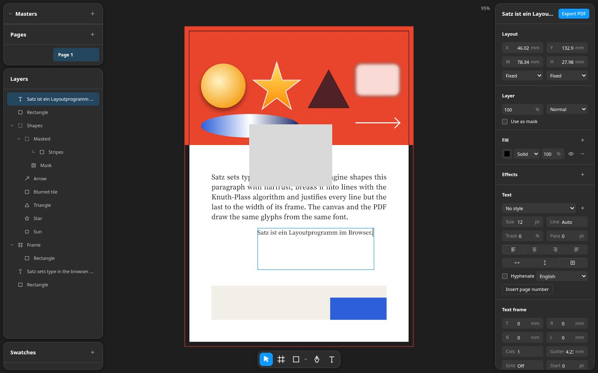
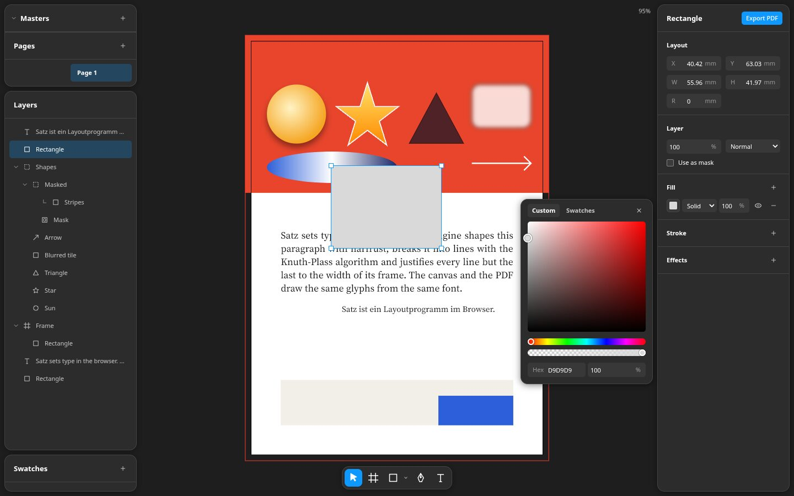
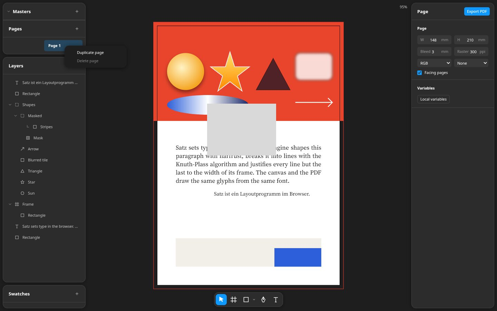
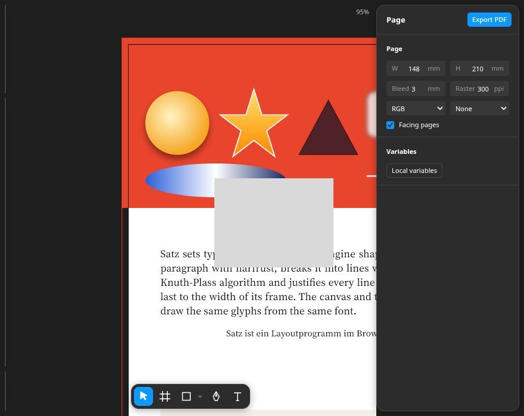
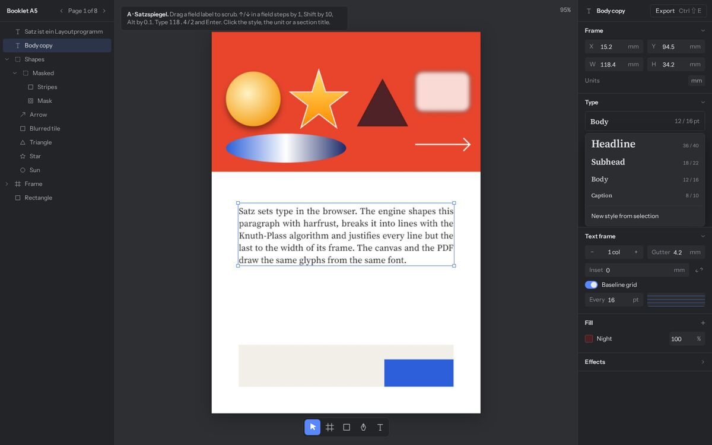
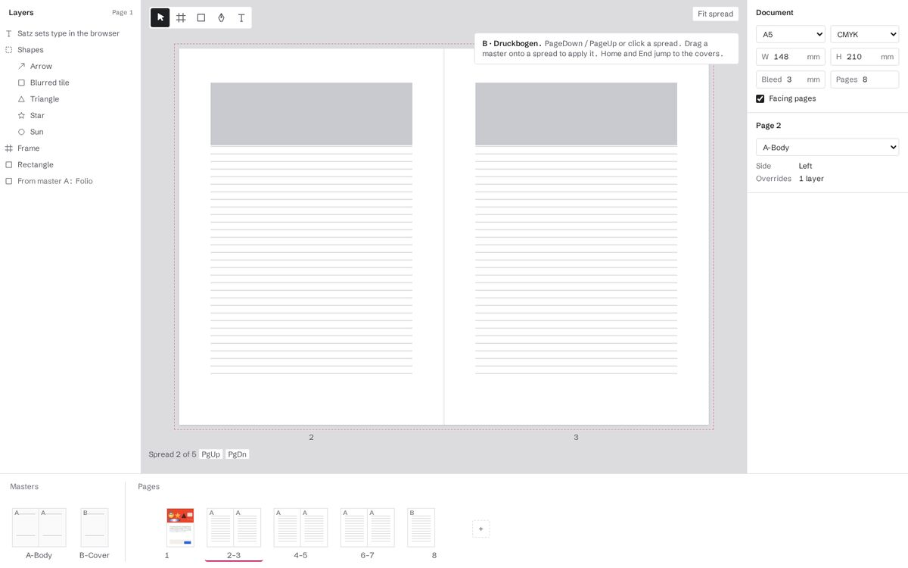
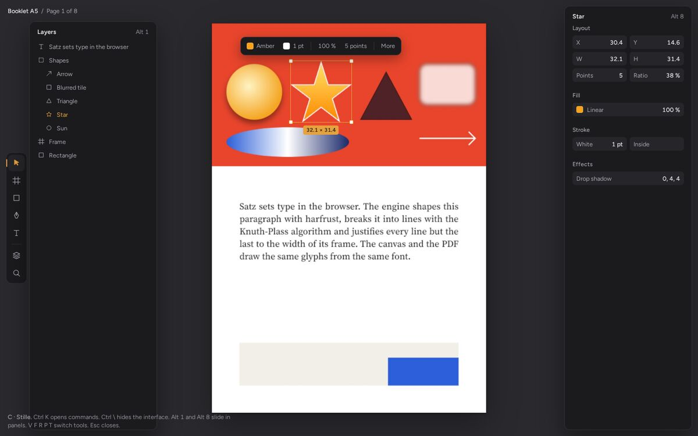
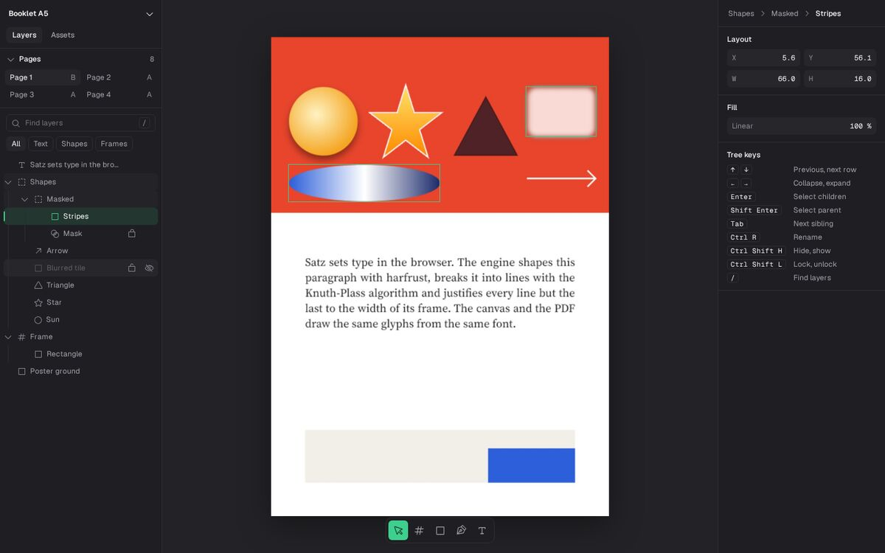
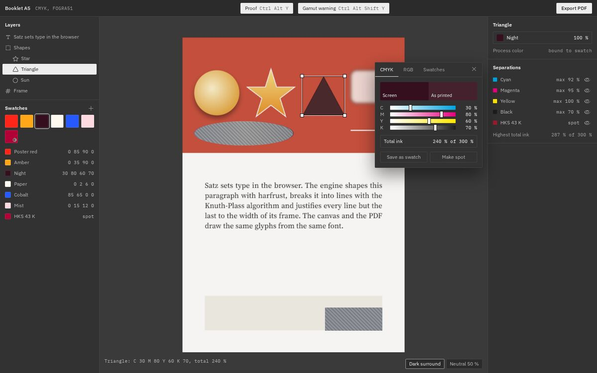
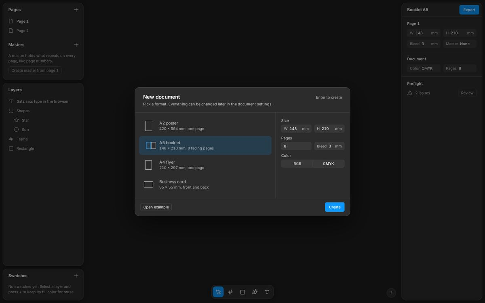

Satz – UI/UX-Review und 6 Designvorschläge
Stand 2026-09-25, Commit 1ad76b4. Geprüft: web/src/*.tsx, index.css, renderer.ts, keys.ts und die laufende App (Playwright, 1440 × 900 und 880 × 700). Mockups liegen in AGENT/ui-ux/, sind statisches HTML ohne WASM; die Seite ist ein echtes Rendering der App als Bild.
1. Corporate Identity als Prüfmaßstab
| Ziel | Woran es messbar ist |
|---|---|
| Professionell | Konsistente Einheiten, Beschriftungen und Abstände; WCAG AA (4,5:1) für Text; keine sichtbaren Brüche (abgeschnittene Werte, leere Panels, Layoutfehler). |
| Minimalistisch | Jedes Element trägt Information; nichts doppelt; Leere hat eine Aufgabe (Leerzustand erklärt, was zu tun ist). |
| Smooth | Zustandswechsel mit 120–260 ms Übergang statt Sprung; Fokus bleibt erhalten; alles per Tastatur erreichbar; prefers-reduced-motion respektiert. |
| Farbe sparsam | 1 Akzent, nur für Auswahl, aktiven Zustand und Fokus. In einem Druckprogramm zusätzlich: Chrome neutral, weil jede Farbe im UI die Beurteilung der Druckfarben verfälscht. |
2. Bestand: Urteil pro Bereich
Schwere: H verletzt die CI deutlich, M spürbar, L Feinschliff, ✓ passt.




| Bereich | Ist | Abweichung von der CI | |
|---|---|---|---|
| Farben | Figma-UI3-Grautöne, Akzent #0d99ff. | Akzent an 9 Stellen: aktives Werkzeug (Vollfläche), Export-Button, Menü-Hover (Vollfläche), ausgewählte Ebene, aktuelle Seite, Checkbox, Ausrichtungsraster, Drop-Linie, Fokus. Die aktuelle Seite ist dauerhaft blau, obwohl sie nicht „ausgewählt“ ist. Zu viel Farbe für „sparsam“. | M |
| Kontrast | --text-3 = Weiß 45 %. | Feldlabels und Einheiten auf --input: 3,75:1, auf Panel 4,1:1. Weiß auf #0d99ff (Export, aktives Werkzeug, Menü-Hover): 3,0:1. Alle unter AA. | H |
| Schrift | font: 11px Inter, system-ui. | Inter wird nirgends geladen; ohne lokale Installation fällt es auf die Systemschrift zurück (im Screenshot Noto Sans). Das Erscheinungsbild hängt damit vom Rechner ab: unprofessionell. | H |
| Bewegung | 0 transition/animation in index.css. | Popover, Menüs, Aufklappen, Werkzeugwechsel, Zoom-Sprünge (Shift 1) erscheinen hart. „Smooth“ ist derzeit nicht erfüllt. | H |
| Panel-Aufbau | 3 schwebende Karten links (Masters/Pages, Layers, Swatches), 1 rechts, 13 px Radius, Schatten. | Bei 900 px Höhe ist Swatches auf die Kopfzeile gequetscht; Masters ist aufgeklappt, aber leer. Vier Kartenränder plus Schatten wirken unruhiger als nötig; der Schatten erfüllt über dunklem Canvas kaum eine Aufgabe. | M |
| Seiten und Master | Liste, bei Doppelseiten 2 Spalten. | Seite 1 steht allein in der rechten Spalte und wirkt wie ein Button. Keine Miniaturen, kein Leerzustand für Master, Master-Buchstabe grau ohne Erklärung. Masters hat Chevron, Pages nicht (inkonsistent). | M |
| Ebenen | Baum mit Drag und Drop, Umbenennen per Doppelklick. | Solide. Es fehlen Sichtbar/Sperren beim Hover, Suche, Hover-Hervorhebung auf dem Canvas und Tastaturnavigation im Baum. | L |
| Werkzeugleiste | Unten mittig, Formen im Dropdown. | Passt zu Figma UI3. Formen-Chevron nur 14 px breit (kleines Ziel); aktive Vollfläche ist die lauteste Farbfläche im UI. | L |
| Properties | Abschnitte untereinander, Export oben rechts. | Kopf „Page“ und Abschnitt „Page“ doppelt. Selects ohne sichtbares Label („None“ = Master, „RGB“ = Farbmodus). Deckkraft-Feld ohne Label. „T R B L“ bei Insets kollidiert mit „R“ = Radius. Gutter zeigt „4.2:“ abgeschnitten. Nicht einklappbar. | M |
| Zahlenfelder | Tippen, Enter, Escape. | Kein Pfeiltasten-Schritt, kein Ziehen am Label, keine Rechenausdrücke. Für ein Präzisionswerkzeug der größte Bedien-Rückstand im Panel. | M |
| Farbwähler | Custom/Swatches, HSV, Hex, CMYK-Felder. | Sauber und klein. Kein Vergleich „Bildschirm/Druck“, kein Gesamtfarbauftrag, obwohl CMYK Kernfunktion ist. | L |
| Menüs | Kontextmenü, Formenmenü. | Hover als blaue Vollfläche (laut, 3:1). Kontextmenü hat eine leere 16-px-Symbolspalte, dadurch schief eingerückt. Hintergrund #1e1e1e dunkler als die Panels, die es überlagert. | M |
| Variablen-Dialog | Modaler Dialog, Leerzustand mit Text. | Gut: echter Leerzustand. Großflächig leer, aber das ist der richtige Zustand. | ✓ |
| Export | Blauer Button, lädt sofort herunter. | Keine Rückmeldung, keine Voreinstellung, kein Preflight vor dem Export (laut TODO geplant). Der Button ist die auffälligste Fläche, obwohl er selten gebraucht wird. | M |
| Leerzustände | Swatches, Masters leer. | Nur Überschrift und „+“, kein Hinweis, was das Panel tut. Für Erstnutzer (Portfolio-Publikum) ein Stolperstein. | M |
| Schmale Fenster | Unter 900 px wird die linke Spalte 0 breit. | Ränder der versteckten Panels bleiben als Linien am linken Rand sichtbar; Werkzeugleiste liegt über der Seite; Zoom-Anzeige kollidiert mit dem Panel. | M |
| Canvas | Hintergrund #1e1e1e, Beschnitt #000, Anschnitt #ff3b30. | Leerer Anschnitt wird in Canvasfarbe gezeigt, die Seite bekommt dadurch einen dunklen Rand; die schwarze Beschnittlinie verschwindet dort (1,3:1). Anschnitt in Signalrot liest sich als Fehler und ist die zweitlauteste Farbe. Canvas gleich dunkel wie das Chrome: Arbeitsfläche und UI trennen sich nicht. | M |
| Canvas-Verhalten | Zoom, Pan, Hover, Alt-Duplizieren, Alt/Shift beim Skalieren. | Kein Einrasten an Seitenrand, Mitte oder anderen Objekten, keine Abstandsanzeige, keine Lineale/Hilfslinien. Zoom-Anzeige nicht klickbar. Für Satzarbeit die größte Lücke. | H |
| Tastatur | Figma-Kürzel mit Ctrl. | Gute Basis. Es fehlen Seitenwechsel, Zoom auf Auswahl, Geschwister-Navigation, Kürzel-Übersicht. Buchstaben über e.key, Ziffern/Klammern über e.code: auf Colemak DH konsistent. | L |
Gesamt: Professionell teilweise (Struktur gut, Kontrast/Schrift/Brüche nicht), minimalistisch teilweise (Dopplungen, leere Panels), smooth nein, Farbe teilweise.
3. Vorschläge für Canvas und Tastatur
| Vorschlag | Warum |
|---|---|
Canvas heller als Chrome, z. B. #2a2a2e | Arbeitsfläche trennt sich vom UI ohne Rahmen oder Schatten. Nur Hintergrundfarbe, Renderer sonst unverändert. |
| Optional neutrales 50-%-Grau | Farbkritische Beurteilung (ISO-12646-Prinzip: neutrale Umgebung). Siehe Mockup E. |
| Anschnitt gestrichelt in Akzent 40 %, Beschnittlinie weg | Die weiße Seite zeigt den Beschnitt selbst; Rot bleibt für Fehler frei. |
| Leichter Seitenschatten, Seitennummer und Master-Buchstabe unter der Seite | Seite liest sich als Papier; Orientierung im Heft ohne Panel. |
| Vorschaumodus W | Blendet Anschnitt, Rahmenkanten und Hilfslinien aus, schneidet auf Beschnitt (InDesign-Standard). |
| Einrasten und Abstände | Seitenrand, Mitte, Satzspiegel, andere Objekte; Alt beim Hover zeigt Abstände (Figma). Größte Canvas-Lücke. |
| Lineale und Hilfslinien Shift R | Grundwerkzeug im DTP; Hilfslinien aus dem Lineal ziehen, pro Master speicherbar. |
| Maßetikett unter der Auswahl beim Ziehen | Rückmeldung ohne Blick ins Panel (Mockup C). |
| Weicher Zoom 180 ms bei Shift 1/Shift 2 | Orientierung bleibt erhalten; erfüllt „smooth“. |
| Zoom-Anzeige als Menü | Einpassen, 100 %, Auswahl, direkte Eingabe. |
| Shift 2 Zoom auf Auswahl | Figma-Standard, fehlt. |
| PgUp/PgDn, Home/End | Seiten/Druckbogen wechseln; bei 8 Seiten sonst nur per Maus. |
| Tab/Shift Tab, Shift Enter | Nächstes/voriges Geschwister, Eltern wählen (Figma). |
| Ctrl Shift H, Ctrl Shift L | Ausblenden, Sperren (Funktion fehlt noch). |
| Alt A/D/W/S/H/V | Ausrichten links/rechts/oben/unten/Mitte (Figma). |
| Ctrl K Befehlspalette | Jede Funktion auffindbar ohne Menüleiste (Mockup C). |
| Ctrl \ UI ausblenden, ? Kürzel-Übersicht | Figma-Standard; Übersicht macht Kürzel lernbar (Mockup F). |
Zahlenfelder: ↑/↓ ±1, Shift ±10, Alt ±0,1, Label ziehen, 118/2 | Präzision ohne Maus-Tipp-Wechsel (Mockup A). |
| Proof Ctrl Alt Y, Gamut Ctrl Alt Shift Y | Ctrl Y ist in keys.ts bereits Redo, daher mit Alt. |
4. Sechs Designs
Jedes Design hat einen anderen Fokusbereich und ein anderes Ziel; Schrift, Akzent, Radius und Dichte unterscheiden sich bewusst. Alle teilen: 1 Akzent, neutrale Grautöne, Übergänge 120–260 ms, prefers-reduced-motion, AA-Kontrast. A–C mit frontend-design (eigene Plan-/Review-Runde gegen die „AI-Default“-Liste, eigene Icons der App), D–F mit design-taste-frontend (Design Read, 3 Dials, Phosphor-Icons, Shape-Lock, keine Gedankenstriche). Hinweis: Der Taste-Skill ist für Landingpages gebaut; Regeln zu Hero, Bildern und Logo-Walls greifen hier nicht und wurden ausgelassen.

A · Satzspiegel frontend-designFokus: Inspector
Ziel: Präzision beim Setzen. Satz ist ein Satzprogramm; der Inspector soll sich wie ein Typometer anfühlen.
- Angedockte Panels mit Haarlinien statt Karten: maximal Canvas, keine Schatten, ruhigste Kante.
- Instrument Sans 12 px, Tabellenziffern: schmal, technisch, bessere Lesbarkeit als 11 px.
- Kobalt
#5a86ffnur für Auswahl, Fokus, Schalter: ruhiger als Figma-Blau, weiß-auf-Kobalt nur als Werkzeug-Icon. - Textstil als Specimen: Stilname in der echten Schrift und relativen Größe; Stil erkennt man, statt ihn zu lesen.
- Felder: Label ziehen, Pfeiltasten, Rechnen, Einheit per Klick mm/pt/px. Laufweite in 1/1000 em (InDesign-Standard statt %).
- Einklappbare Abschnitte mit Höhenanimation, Einzug/Abstände gekoppelt mit Entkoppeln-Knopf, Grundlinienraster sichtbar als Muster.
- Export als Rahmen-Button mit Kürzel: selten gebraucht, darf nicht die lauteste Fläche sein.
Bewertung: CI sehr gut getroffen, nah am Figma-UI3-Bestand. Größter Gewinn pro Aufwand.

B · Druckbogen frontend-designFokus: Seiten, Master
Ziel: das 8-seitige Heft als Ganzes sehen. Helles Thema wie Papier.
- Bogenleiste unten statt Seitenliste: Miniaturen in Druckbögen, Master links davon; Master auf Bogen ziehen weist ihn zu.
- Hell, kühl-neutral (
#f3f3f4, Arbeitsfläche#dcdcdf): Druckvorstufe denkt in Papier; kein Creme-Ton. - Magenta
#c2185bals einziger Akzent: Druckfarbe als Herkunft; nur Unterstrich des aktuellen Bogens, Fokus, Anschnitt. - Schibsted Grotesk: Zeitungs-Grotesk, passt zum Druckthema.
- Aktives Werkzeug schwarz statt Akzent: Farbe bleibt für Dokumentbezug.
- Verhalten: PgUp/PgDn/Home/End, Überblendung beim Bogenwechsel, Seitenzahlen unter den Seiten.
Bewertung: stark für Hefte, für das A2-Plakat verschenkt die Leiste 150 px. Weicht vom festgelegten dunklen Look ab.

C · Stille frontend-designFokus: Canvas, Befehle
Ziel: Konzentration. Standardmäßig nur Seite, Werkzeugschiene und eine Kontextleiste über der Auswahl.
- Kontextleiste an der Auswahl: die 4 häufigsten Eigenschaften dort, wo man hinschaut; „More“ öffnet den vollen Inspector.
- Panels als Schubladen (Alt 1, Alt 8), gleiten 260 ms über den Canvas statt ihn zu verkleinern.
- Befehlspalette Ctrl K: Suche über Befehle, Ebenen, Seiten mit Kürzeln daneben; lehrt Kürzel nebenbei.
- Ctrl \ blendet alles aus (Schiene gleitet weg).
- Bernstein
#e6a23cnur für Auswahl und aktives Werkzeug (Strich statt Fläche); Figtree für einen weichen Ton. - Maßetikett unter der Auswahl.
Bewertung: am „smoothesten“, aber viele Wege sind versteckt; für Erstnutzer schwerer. Weicht vom Figma-UI3-Layout ab.

D · Präzision tasteFokus: Ebenen, Navigation
Design Read: Werkzeug-UI für Profis, Linear-artig nüchtern, Zinc und Geist. Dials: Variance 2, Motion 3, Density 7.
- Ebenenbaum mit Führungslinien, Eltern der Auswahl leicht hinterlegt, Auswahl mit 2-px-Kante statt Vollfläche.
- Suche / und Filter (Text, Formen, Rahmen) mit Leerzustand.
- Hover zeigt Sperren/Sichtbar, gesetzte Zustände bleiben sichtbar; ausgeblendete Ebenen gedimmt.
- Hover auf Zeile hebt das Objekt auf dem Canvas hervor.
- Tastatur im Baum: Pfeile, Enter, Shift Enter, Tab, Ctrl R, Ctrl Shift H/L.
- Breadcrumb im Inspector „Shapes › Masked › Stripes“, klickbar.
- Smaragd
#3ecf8e, Geist Mono für alle Zahlen (Density 7), Radius 6 px überall.
Bewertung: löst die Orientierung in tiefen Dokumenten; passt zum Figma-Layout. Grün als Auswahlfarbe ist ungewohnt.

E · Proof tasteFokus: Farbe, Ausgabe
Design Read: farbkritisches Druckwerkzeug, IBM-Plex-Präzision, monochrom. Dials: Variance 2, Motion 2, Density 6.
- Kein Akzent: nur reine Grautöne (Chroma 0). Aktiv = invertiert (Weiß auf Grau). Die einzigen Farben sind Dokument und Druckfarben.
- Auswahl als Doppelkontur weiß/schwarz: sichtbar auf jeder Farbe, auch auf Blau.
- Proof und Gamut-Warnung in der Kopfzeile; außerhalb FOGRA51 schraffiert.
- Umgebung umschaltbar dunkel oder neutral 50 %.
- CMYK-Regler mit Farbverlauf der Druckfarbe, „Bildschirm | Druck“ nebeneinander, Gesamtfarbauftrag gegen 300 % (invertiert bei Überschreitung).
- Separationen mit Maximalwerten und Sonderfarbe; Swatches als Raster plus Liste mit CMYK-Werten.
- Radius 2 px, IBM Plex Sans/Mono.
Bewertung: fachlich das stärkste Argument („Farbe sparsam“ wird zur Funktion). Farbvorschau im Mockup ist naiv berechnet; echt übernimmt das moxcms.

F · Erster Eindruck tasteFokus: Erststart, Export
Design Read: Redesign mit Erhalt, für Erstnutzer und Recruiter. Figma-UI3-Tokens bleiben, Inter wird geladen. Dials: Variance 3, Motion 4, Density 5.
- „New document“ beim Start: Formate mit proportionalen Seitensymbolen (A2-Plakat, A5-Heft 8 Seiten, …), Enter erstellt, „Open example“ daneben.
- Leerzustände für Master und Swatches erklären den Zweck und bieten die nächste Aktion.
- Export als Popover mit Voreinstellung und Preflight-Liste; „Export anyway“, Fortschritt, Toast mit Dateiname.
- Kürzel-Übersicht ? in 3 Gruppen.
- Duplikate entfernt: Kopf zeigt Dokumentname statt „Page“, Masters/Pages ohne Chevron-Mix.
- Kontrast angehoben:
--text-360 % statt 45 %.
Bewertung: geringstes Risiko, passt exakt zum festgelegten Design. Allein nicht genug für „smooth“ und „Farbe sparsam“.
5. Empfehlung
F als Basis, dazu A-Felder, D-Baum und E-Farbe. F behält Figma UI3 und dark (festgelegt) und behebt Schrift, Kontrast, Leerzustände, Export. Aus A kommen Zahlenfelder, einklappbare Abschnitte und Textstil-Specimen, aus D Baum-Tastatur, Hover-Hervorhebung und Breadcrumb, aus E neutrale Grautöne, Doppelkontur-Auswahl als Option und Proof/Gamut. Akzent bleibt Figma-Blau, aber nur als Kante/Tönung, nie als weiße Schrift auf Blau. B (hell) und C (versteckte Panels) nicht als Ganzes übernehmen: sie widersprechen dem festgelegten Layout; die Bogenleiste aus B lohnt sich später als einblendbare Ansicht für Hefte, die Befehlspalette aus C als Zusatz.
Reihenfolge nach Wirkung: 1. Inter laden, Kontrast AA, Akzent reduzieren. 2. Übergänge 120–260 ms. 3. Zahlenfelder. 4. Einrasten und Abstände auf dem Canvas. 5. Leerzustände und Export-Popover. 6. Baum-Tastatur, Shift 2, PgUp/PgDn. 7. Proof.
6. Getestet
Bestand: App mit Vite und Playwright (Chromium, SwiftShader) gestartet, Rechteck und Text gezeichnet, Farbwähler, Formenmenü, Variablen, Kontextmenü, schmales Fenster geöffnet. Mockups: jedes in Chromium geöffnet, Kerninteraktion per Skript ausgelöst und per Screenshot geprüft (A Stil-Menü, Einklappen, Rechenausdruck; B PgDn; C Palette, Schubladen; D Hover, Baum; E Proof, Gamut, Umgebung; F Dialog, Export). Nicht getestet: Firefox, Screenreader, echte Tastatur mit Colemak DH, Mockups ohne Internet (Schriften und Phosphor kommen per CDN).
7. Feedback des Nutzers
Pro Entwurf
- A: Schriftauswahl übernehmen.
- B: Übersicht aller Seiten und Master gefällt, Platz dafür noch offen. Formatvorlagen (A4, A5, …) in der Dokumenteinstellung übernehmen, PgUp/PgDn ebenso. Master per Auswahlfeld in den Einstellungen zuweisen, nicht per Ziehen.
- C: Jedes Element einzeln ausblendbar. Befehlspalette Ctrl K gewünscht, Einbau offen. Einstellungsfelder rechts (Radien, Schrift, Schlichtheit) als Vorbild. Schnellbearbeitung über der Auswahl übernehmen, Größenanzeige darunter nicht.
- D: Baum-Tastatur übernehmen. Hervorhebung auf dem Canvas ja, aber ohne Animation.
- E: Proof, Gamut-Warnung und Separationen mit Farbauftrag interessant, aber nur bei Bedarf eingeblendet; Platz im Layout offen.
- F: Als Ganzes zu sehr Figma-Klon. Gut: Panel-Abstände, Radien, Schatten, Startbildschirm als erster Entwurf. Preflight noch nicht final.
Allgemein
- Animationen blockieren nie: alles bleibt während einer Animation sofort klickbar. Animationen selbst sind erwünscht.
- Layout mit festen, nicht schwebenden Panels wie in A: schlichter und platzsparender.
- Zahlenfelder wie in A: Ziehen, +/−, usw.
- Smart Guides: beim Verschieben Abstände zu den 2 nächsten Elementen; mit Alt ohne Verschieben Abstand zum Element unter der Maus (wie Figma).
- Einrasten an Elementen, Raster, Seitenkanten usw. Gewichtung später durchdenken und testen.